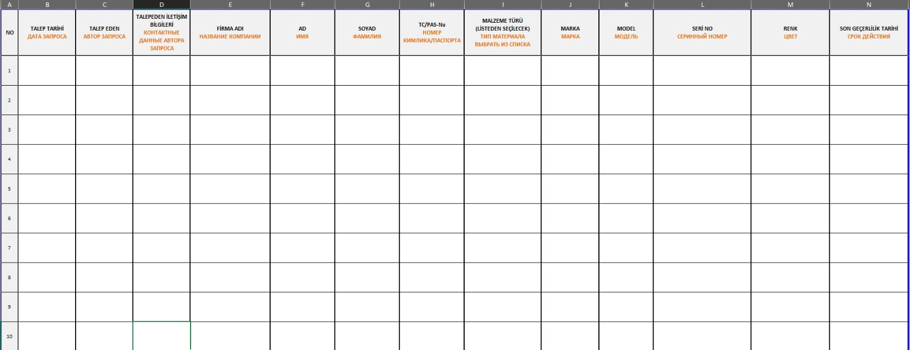

Инструкция по подаче заявки на вход материалов и жетоны для Akkuyu Nuclear Power Plant
1. Заявка на жетонный пропуск
Для регулярного входа и выхода материалов на строительную площадку Akkuyu Nuclear Power Plant или тех, которые планируется ввести, выдается жетонный пропуск.
Эти пропуска действительны до конца запрашиваемого года и должны быть обновлены в начале года по новой заявке.
Примечание: Жетонный пропуск не выдается для расходных материалов (например, винты, аэрозольные краски и т.д.).
2. Требования для ввода материалов
• Для электро-санитарного оборудования, геодезических приборов, лагерного оборудования, контрольно-измерительных приборов и материалов для столовой необходимо указать, где и для какой цели будут использоваться материалы, и отправить фото материалов на следующие адреса:
• Севинч Кара sevinc.kara@t2ic.com
• Рыфат Сефа Кючюк rifat.kucuk@t2ic.com
• Для материалов для камер и дронов необходимо отправить письмо соответствующим лицам:
• Беркай Офлаз berkay.oflaz@t2ic.com
• Борис Попов boris.popov@t2ic.com
• Для запроса жетона для электронных материалов необходимо получить одобрение у следующих компаний и лиц:
• Компании: EGN, AKKUYU TRST, AKKUYU TST, İÇTAŞ NÜKLEER, İÇTUR SERVİS, İÇTAŞ ENDÜSTRİEL, TİTAN-2, T2-IC JV, TSM ENERJI, ELENİA TRUZİM
• Электронные адреса: office@t2ic.com, Андрей Шевченко andrei.shevchenko@t2ic.com
После одобрения Андреем Шевченко в разделе объяснений должны быть добавлены подробности о материале (фото, причина для входа/выхода на площадку и т.д.), а в теме письма должно быть написано "ЗАПРОС ЖЕТОНА ОТ КОМПАНИИ". Пример: "ЗАПРОС ЖЕТОНА NAZIM İNŞAAT". Письмо должно быть отправлено Севинч Кара sevinc.kara@t2ic.com и Рыфату Сефа Кючюку rifat.kucuk@t2ic.com.
3. Заявка на жетонный пропуск с новым паспортом
Если у сотрудника, подающего заявку на жетон, был изменен паспорт, необходимо выполнить следующие действия для обработки заявки:
Необходимые документы для заявки:
• Фотография сотрудника.
• Отсканированные копии первых страниц старого и нового паспортов.
• Документ SGK 4A о приеме на работу (можно получить через Управление человеческими ресурсами или через e-Devlet).
• Скан синих удостоверений личности с двух сторон (или форма заявки и снимок экрана; если приехал по назначению, необходимо предоставить документ о назначении и рабочую книжку).
Эти документы должны быть отправлены на адреса: tugbahan.karakaya@t2ic.com, muslum.elibol@t2ic.com и ezgi.kaygisiz@t2ic.com. Тема письма должна быть "NEW PASSPORT/YENİ PASAPORT". Также необходимо сдать старую пропускную карту.
Адрес: Модуль 3, двухэтажное здание охраны рядом с зданиями Akkuyu ABK.
4. Недостающая информация и важные замечания
• Разделы о марке, модели, серийном номере и цвете должны быть заполнены полностью и правильно. Эти данные не должны быть оставлены пустыми.
• Только указанные компании должны действовать в соответствии с вышеописанными процедурами подачи заявок.
Заявки на жетоны должны быть завершены с учетом всех вышеуказанных шагов и при наличии всех необходимых документов.
ВАЖНО: Только указанные компании должны заполнять письмо, соблюдая указанные в нем замечания.
ВАЖНО: В разделе о марке, модели, серийном номере и цвете должна быть указана информация. Пожалуйста, не оставляйте эти поля пустыми.

Кроме того, нижеуказанный файл Excel должен быть заполнен с учетом следующих правил:
• Заявка на жетон для сотрудника должна быть сделана на основе его номера TC и данных о пропуске.
• Для иностранных сотрудников обязательно указывать номер паспорта "Zagran".
• Заявки, сделанные с рабочими идентификационными номерами, начинающимися с 99, не будут учитываться.
• Заявки на жетоны для сотрудников без пропусков Akkuyu не будут обработаны.
• Компания, выдавшая пропуск для Akkuyu, должна быть той же компанией, которая выдает жетоны. В противном случае необходимо внести изменения в компанию, выдавшую пропуск.

Необходимые документы:
• Excel-файл заявки на жетоны
• Письмо (на русском и турецком языках) – для указанных компаний
• Фото пропускной карты сотрудника для Akkuyu
ПРИМЕЧАНИЕ: Заявки с недостающей информацией не будут обработаны.